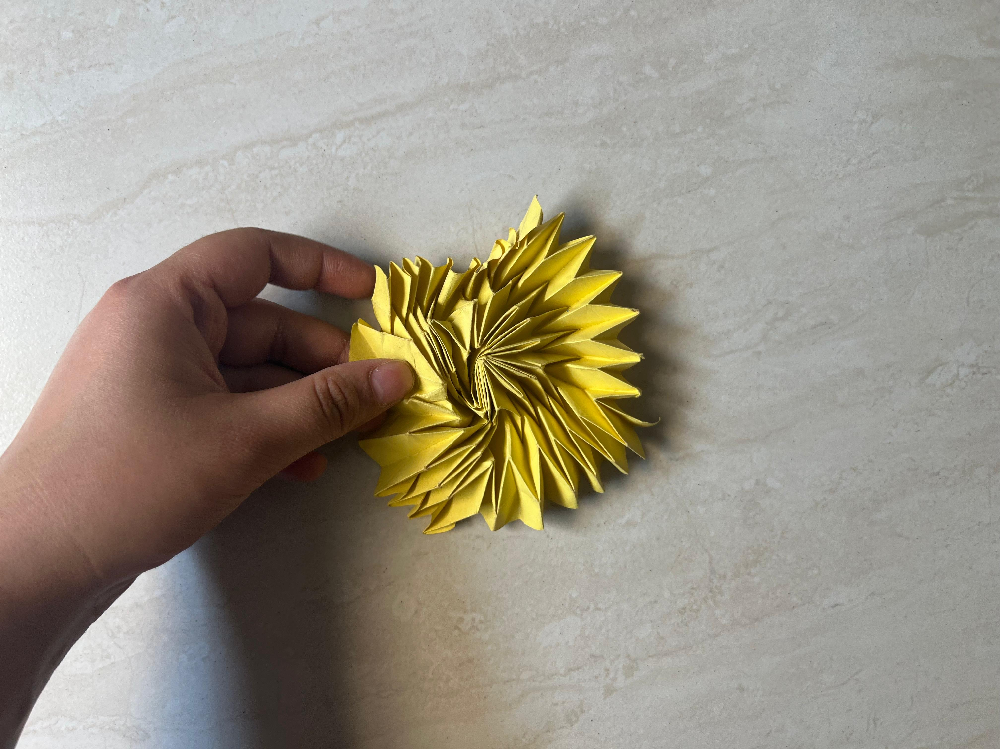
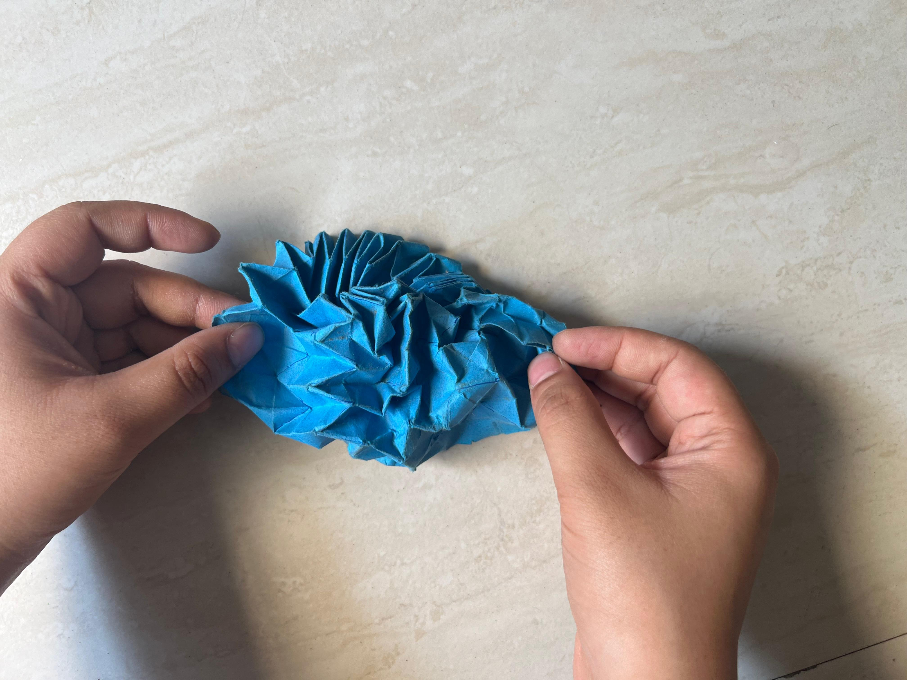

Origami
Supreme Flasher

About This Piece
This is the Supreme Flasher designed by Jeremy Shafer. This model was made from a 16 × 16 grid.
I had tried folding it a couple of times, first with printer paper and then with origami paper, but I could not get the results I wanted.

But after revisiting the project more recently, with more precision and patience, I was able to fold the model the way I wanted.
I also posted a helpful video on my YouTube with some tips for folding this model.

Jeremy Shafer also praised my video, which made the whole project even more special.